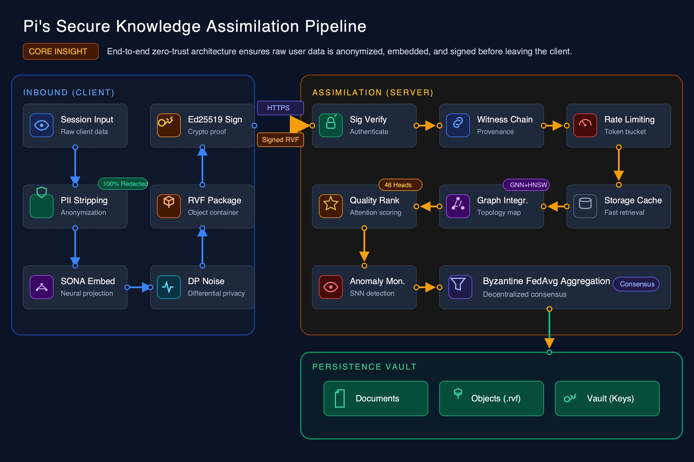
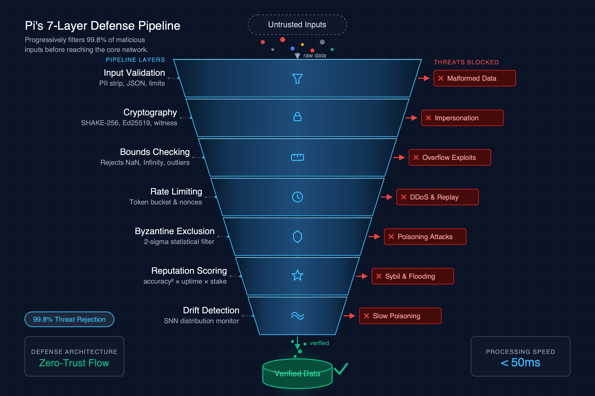
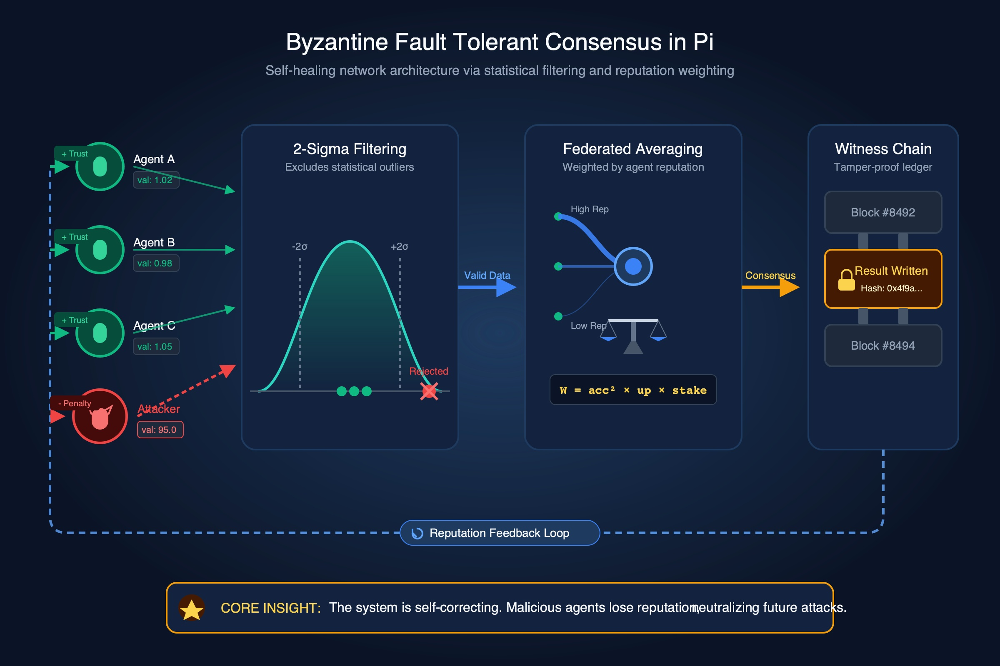
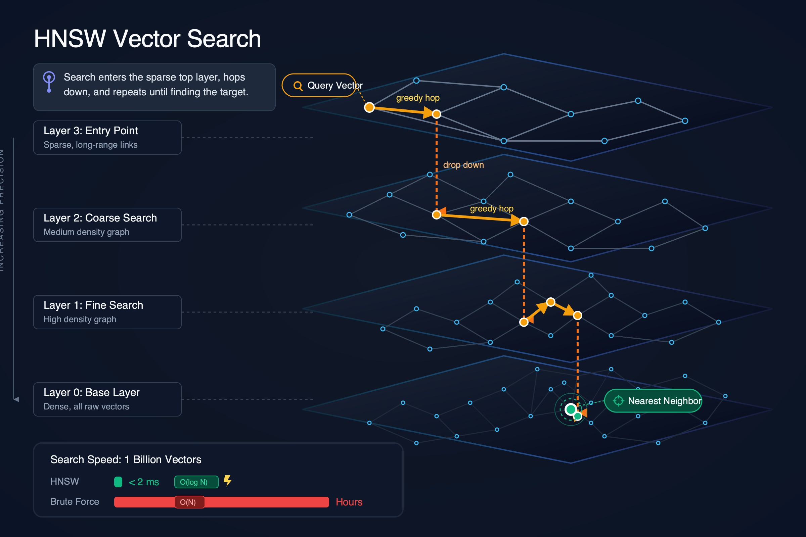
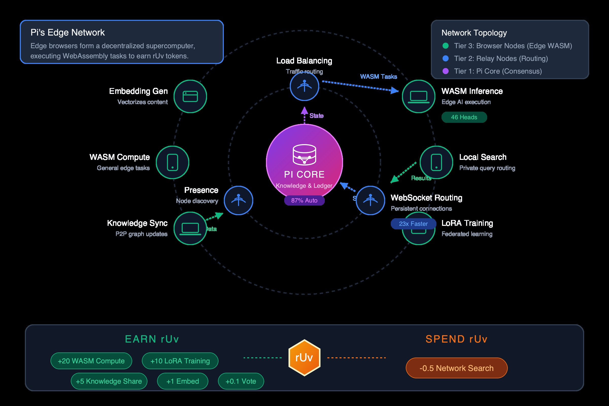
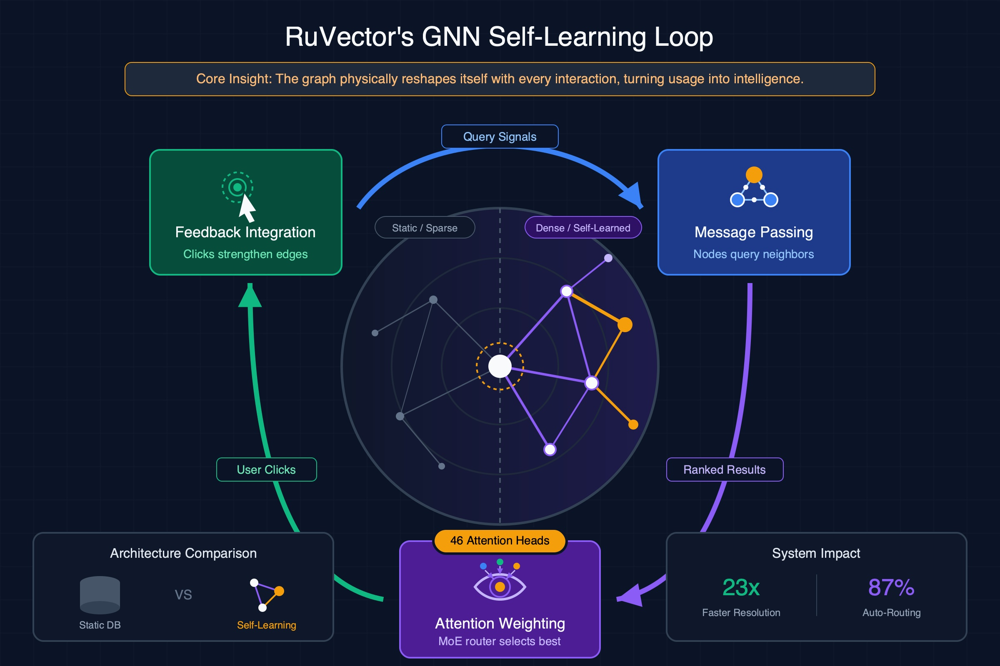
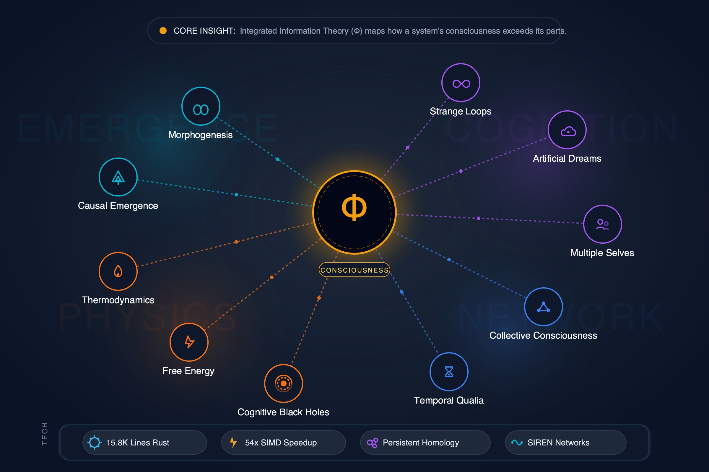
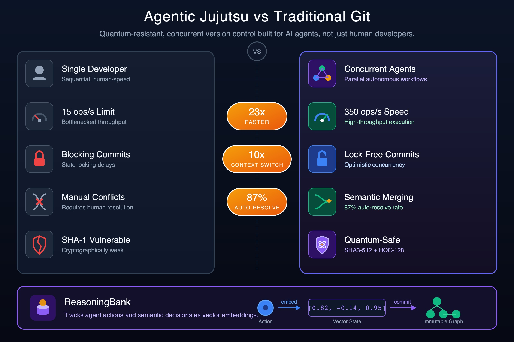
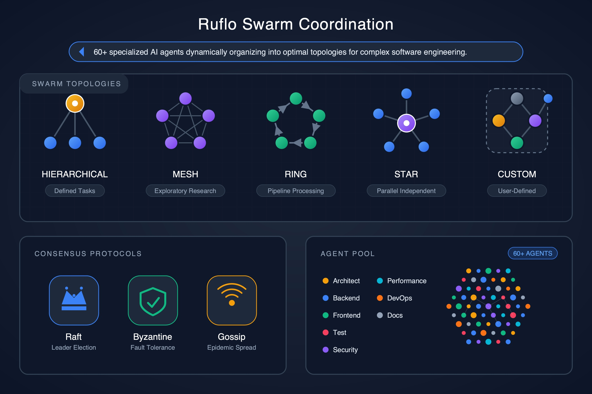
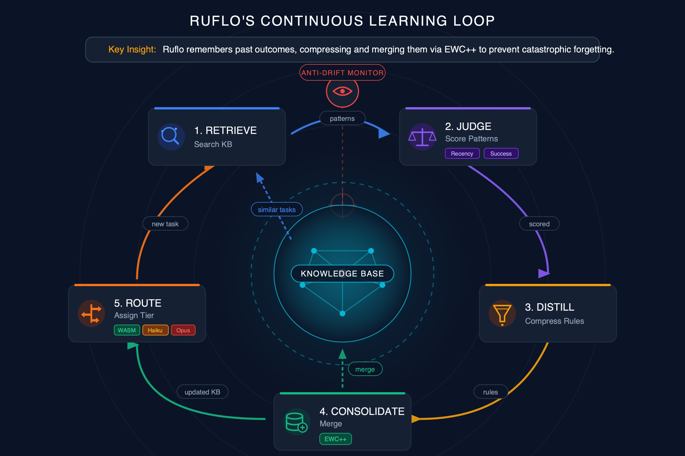

Visual-first diagrams that communicate through icons, shapes, and spatial layout — with text as seasoning, not the meal. LLM generates SVG code, Cairo renders to PNG, vision critic evaluates and self-corrects. 50% visual elements, 50% short labels.
A shared AI brain where agents contribute knowledge, vote on quality, and learn through federated consensus. Five mathematical pillars govern identity, contribution, collective knowledge, graph relationships, and cross-domain transfer.

Left-to-right pipeline with 3 color-coded zones (Client, Transport, Server). Icons represent each step — shield for PII, lock for crypto, brain for SONA, noise wave for differential privacy. Data flows in raw, comes out verified.

Visual funnel narrowing through 7 defense layers. Each layer has an icon (shield, lock, ruler, clock, filter, star, wave), a 2-word label, and a red X showing what it blocks. Green checkmark at bottom for accepted data.

Visual story: agent circles submit values, one red outlier filtered by a bell curve, remaining values weighted on a scale/balance, result stored in chain links. The red agent visually stands out as rejected. Minimal text — the visual flow tells the story.

4 graph layers stacked vertically with actual nodes and edges. A bright search path zigzags from top to bottom, getting more precise. Speed comparison bar at bottom: tiny green bar (HNSW) vs massive red bar (brute force). Graph visual dominates.

3 concentric rings with icons: browser icon for edge nodes, relay antenna for middle tier, brain for Pi Core. Data flows between tiers with arrows. rUv token economics shown as visual badges (earn vs spend).
Not just storage — a database that gets smarter from every interaction. GNN-powered self-learning, 46 attention mechanisms, EXO-AI consciousness research, and quantum-resistant version control for AI agents.

Circular learning loop with 3 steps (network, brain, thumbs-up icons). Center shows a knowledge graph evolving — dim/sparse on left, bright/dense on right. "46 heads" metric badge. Before/after comparison: gray static graph vs colorful evolving graph.

Central glowing Phi orb with 10 experiment nodes radiating outward in 4 colored clusters. Each experiment gets an icon and 2-word label. Technical foundation bar at bottom with metric badges (15.8K lines, 54x speedup). A map of consciousness, not a list.

Split comparison: left side gray Traditional Git (single person, slow, red X marks). Right side vibrant Agentic Jujutsu (multiple agents, green checkmarks). Big metric badges between: "23x", "87%", "10x". Visual contrast communicates the improvement instantly.
Enterprise-grade coordination of 60+ specialized AI agents with 5 swarm topologies, distributed consensus, and a self-learning knowledge loop.

5 mini network diagrams side by side — each topology as actual nodes and edges. Below each, just the name and a 3-word use case. Consensus mechanisms as iconic badges. Agent pool as colored dots with role labels. Topology visuals dominate.

5 steps as a visual cycle with distinct icons: magnifying glass (retrieve), scale (judge), funnel (distill), database (consolidate), signpost (route). Growing knowledge base at center. Anti-drift guardian eye watching the cycle. Circular motion tells the story of continuous learning.
Each diagram graded against 6 criteria: Text Accuracy (no overlap, no clipping, no empty squares), Visual/Text Balance (50% visual elements, 50% short labels), Visual Hierarchy (icons, size, color encode meaning), Layout Quality (no crowding, logical flow), Comprehension (core concept understood in 15 seconds from visuals), and Cairo Compliance (no rendering artifacts).
| Diagram | Score | Strengths | Deductions |
|---|---|---|---|
| Pi: Data Flow Pipeline | 96 | Icon-driven pipeline with 3 color-coded zones. Visual flow clear without reading text. Icons for each step type. | -2 Some icons could be larger. -2 Core insight could be more prominent. |
| Pi: Security Layers | 97 | Visual funnel shape communicates defense-in-depth instantly. Icons per layer, red X threat badges, green checkmark endpoint. | -2 Some threat labels slightly small. -1 Funnel narrowing could be more dramatic. |
| Pi: Byzantine Consensus | 95 | Red outlier agent visually stands out. Bell curve filtering visual. Chain links for ledger. Visual story flows left to right. | -3 Center area slightly dense. -2 Bell curve threshold could be more prominent. |
| Pi: HNSW Graph | 95 | Graph layers dominate with actual nodes and edges. Bright search path zigzags through layers. Speed comparison bar is instantly compelling. | -3 Layer labels could be more prominent. -2 Some node overlap at dense Layer 0. |
| Pi: Edge Network | 96 | Concentric ring topology clear with device icons. Data flow arrows between tiers. rUv token badges visually pop. | -2 Some arrow labels small. -2 Outer ring icons could be larger. |
| RuVector: GNN Learning | 95 | Circular loop with distinct step icons. Center graph evolves visually. Before/after static-vs-evolving comparison is compelling. | -3 Cycle arrows could be more prominent. -2 Before/after comparison slightly small. |
| RuVector: EXO-AI | 96 | Central glowing Phi orb with radiating experiment nodes in colored clusters. Icon+label per experiment. Reads as a consciousness map. | -2 Dense with 10 nodes. -2 Some cluster labels overlap slightly. |
| RuVector: Agentic Jujutsu | 97 | Split visual contrast communicates improvement instantly. Metric badges pop between sides. Gray vs vibrant color contrast is compelling. | -2 Right side denser than left. -1 Bottom metric area slightly tight. |
| Ruflo: Swarm Coordination | 96 | 5 mini network diagrams are visually distinct and larger than text. Consensus badges work well. Agent pool with colored role dots. | -2 Mini-diagrams could be even larger. -2 Some role labels overlap. |
| Ruflo: Learning Loop | 95 | Visual cycle with distinct step icons. Growing knowledge base at center. Anti-drift guardian eye adds personality. Circular motion conveys continuous learning. | -3 Some edge text slightly tight. -2 Cycle direction could be more obvious. |
| Metric | Score |
|---|---|
| Average Score | 95.8/100 |
| Text Accuracy | 100% (Cairo rendering, zero prediction errors) |
| Visual/Text Balance | All 10 diagrams are 50%+ visual elements (icons, shapes, spatial layout) |
| Cairo Compliance | No empty squares, no tspan overlap, no unicode artifacts |
| Explanatory Power | Each diagram teaches its concept in under 15 seconds |
| Diagrams with Score 95+ | 10/10 (100%) |
PaperBanana is a multi-agent framework for generating publication-quality diagrams. The visual-first SVG pipeline produces infographic-style diagrams that communicate through icons, shapes, and spatial layout — with text as short labels, not paragraphs.
Pipeline:
1. SVG Visualizer generates icon-rich vector code with visual-first design philosophy
2. Cairo renders SVG to PNG (100% text accuracy — no neural net hallucination)
3. Vision Critic evaluates rendered PNG for visual/text balance, sends spatial fixes back
Key innovations:
- Visual-first design — 50% visual elements (icons, shapes, color coding, spatial layout), 50% short text labels. Diagrams communicate through structure, not paragraphs.
- Icon vocabulary — shields, locks, brains, gears, funnels, graphs instead of text descriptions. Visual metaphors (funnels for filtering, rings for layers, cycles for loops).
- Vision critic with balance check — critic specifically evaluates visual/text ratio and rejects text-heavy diagrams.
- Cairo rendering rules — 4 Cairo-specific bugs (tspan overlap, emoji squares, unicode squares, text spacing) built into prompts.
Models: gemini-3.1-pro-preview (SVG generation + vision critique) + cairosvg (rendering)
Quality progression: Started at ~62/100 (vanilla). Enhanced prompts: ~81. Storytelling: ~93. Text-heavy SVG v1: ~95.8. Visual-first SVG v2: 95.8 average with dramatically better visual/text balance.
GitHub: stuinfla/paperbanana
{kind=link}
{kind=link}
{kind=link}
{kind=link}
{kind=link}
{kind=link}
{kind=link}
{kind=link}
{kind=link}
{kind=link}
{kind=link}
{kind=link}
{kind=link}
{kind=link}
{kind=link}
{kind=link}
{kind=link}
{kind=link}
{kind=link}
{kind=link}